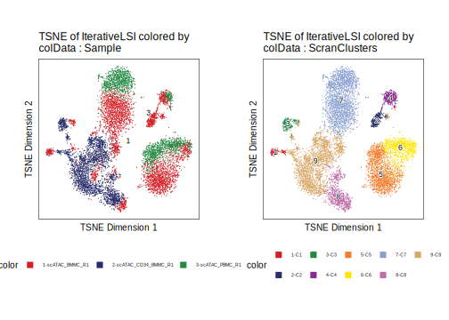

8.2 t-Stocastic Neighbor Embedding (t-SNE)
To run t-SNE in ArchR we use the addTSNE() function:
projHeme2 <- addTSNE(
ArchRProj = projHeme2,
reducedDims = "IterativeLSI",
name = "TSNE",
perplexity = 30
)
## Read the 10250 x 30 data matrix successfully!
## OpenMP is working. 8 threads.
## Using no_dims = 2, perplexity = 30.000000, and theta = 0.500000
## Computing input similarities...
## Building tree...
## - point 10000 of 10250
## Done in 3.98 seconds (sparsity = 0.013328)!
## Learning embedding...
## Iteration 50: error is 96.119537 (50 iterations in 4.88 seconds)
## Iteration 100: error is 84.283356 (50 iterations in 4.65 seconds)
## Iteration 150: error is 81.479100 (50 iterations in 4.41 seconds)
## Iteration 200: error is 80.908645 (50 iterations in 4.54 seconds)
## Iteration 250: error is 80.684604 (50 iterations in 4.66 seconds)
## Iteration 300: error is 3.272179 (50 iterations in 4.55 seconds)
## Iteration 350: error is 3.015959 (50 iterations in 4.28 seconds)
## Iteration 400: error is 2.872997 (50 iterations in 4.25 seconds)
## Iteration 450: error is 2.782066 (50 iterations in 4.22 seconds)
## Iteration 500: error is 2.717122 (50 iterations in 4.19 seconds)
## Iteration 550: error is 2.668713 (50 iterations in 4.21 seconds)
## Iteration 600: error is 2.631420 (50 iterations in 4.19 seconds)
## Iteration 650: error is 2.602676 (50 iterations in 4.19 seconds)
## Iteration 700: error is 2.580617 (50 iterations in 4.18 seconds)
## Iteration 750: error is 2.564394 (50 iterations in 4.21 seconds)
## Iteration 800: error is 2.551759 (50 iterations in 4.23 seconds)
## Iteration 850: error is 2.542569 (50 iterations in 4.24 seconds)
## Iteration 900: error is 2.536309 (50 iterations in 4.26 seconds)
## Iteration 950: error is 2.530784 (50 iterations in 4.27 seconds)
## Iteration 1000: error is 2.526010 (50 iterations in 4.27 seconds)
## Fitting performed in 86.86 seconds.Similar to UMAP, we can plot the t-SNE embedding using plotEmbedding(). The same parameters apply to colorBy and name regardless of which type of embedding is being used.
p1 <- plotEmbedding(ArchRProj = projHeme2, colorBy = "cellColData", name = "Sample", embedding = "TSNE")
## ArchR logging to : ArchRLogs/ArchR-plotEmbedding-371b01084d0e8-Date-2022-12-23_Time-06-21-57.log
## If there is an issue, please report to github with logFile!
## Getting UMAP Embedding
## ColorBy = cellColData
## Plotting Embedding
## 1
## ArchR logging successful to : ArchRLogs/ArchR-plotEmbedding-371b01084d0e8-Date-2022-12-23_Time-06-21-57.logp2 <- plotEmbedding(ArchRProj = projHeme2, colorBy = "cellColData", name = "Clusters", embedding = "TSNE")
## ArchR logging to : ArchRLogs/ArchR-plotEmbedding-371b0a01a2b6-Date-2022-12-23_Time-06-21-59.log
## If there is an issue, please report to github with logFile!
## Getting UMAP Embedding
## ColorBy = cellColData
## Plotting Embedding
## 1
## ArchR logging successful to : ArchRLogs/ArchR-plotEmbedding-371b0a01a2b6-Date-2022-12-23_Time-06-21-59.logggAlignPlots(p1, p2, type = "h")To save an editable vectorized version of this plot, we use plotPDF().
plotPDF(p1,p2, name = "Plot-TSNE-Sample-Clusters.pdf", ArchRProj = projHeme2, addDOC = FALSE, width = 5, height = 5)
## Plotting Ggplot!
## Plotting Ggplot!As we did with UMAP, we can compare the clustering results from Seurat::FindClusters() with the results of clusering with scran:
p1 <- plotEmbedding(ArchRProj = projHeme2, colorBy = "cellColData", name = "Sample", embedding = "TSNE")
## ArchR logging to : ArchRLogs/ArchR-plotEmbedding-371b055e68ad-Date-2022-12-23_Time-06-22-06.log
## If there is an issue, please report to github with logFile!
## Getting UMAP Embedding
## ColorBy = cellColData
## Plotting Embedding
## 1
## ArchR logging successful to : ArchRLogs/ArchR-plotEmbedding-371b055e68ad-Date-2022-12-23_Time-06-22-06.logp2 <- plotEmbedding(ArchRProj = projHeme2, colorBy = "cellColData", name = "ScranClusters", embedding = "TSNE")
## ArchR logging to : ArchRLogs/ArchR-plotEmbedding-371b053239033-Date-2022-12-23_Time-06-22-08.log
## If there is an issue, please report to github with logFile!
## Getting UMAP Embedding
## ColorBy = cellColData
## Plotting Embedding
## 1
## ArchR logging successful to : ArchRLogs/ArchR-plotEmbedding-371b053239033-Date-2022-12-23_Time-06-22-08.logggAlignPlots(p1, p2, type = "h")
To save an editable vectorized version of this plot, we use plotPDF().
plotPDF(p1,p2, name = "Plot-tSNE-Sample-ScranClusters.pdf", ArchRProj = projHeme2, addDOC = FALSE, width = 5, height = 5)
## Plotting Ggplot!
## Plotting Ggplot!